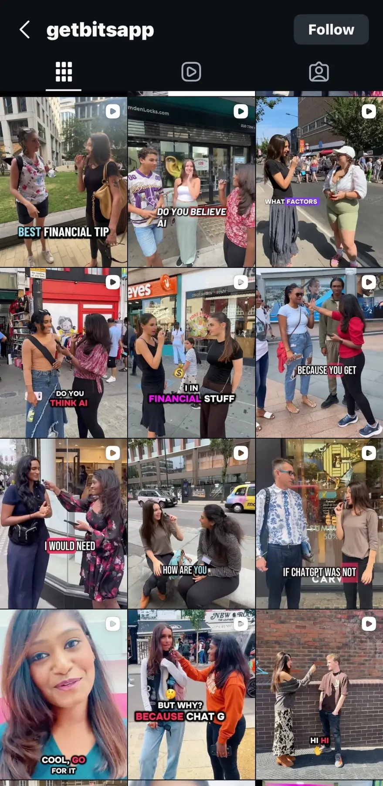

Talking about money has always been complicated. Talking about money digitally, at scale and within a regulated environment like fintech? Even more so.
Financial Education Without Intimidation
At Bits, we believed that financial education shouldn’t feel intimidating, patronising or out of reach. It should be accessible, clear and grounded in responsibility.
That belief shaped the way we communicated with users—and ultimately led to the launch of Bits AI, our AI-powered financial education experience.
Communicating the FCA-Compliant Way
In the UK, financial communication isn’t simply about tone—it’s about trust, accuracy and compliance. Every word matters.
While managing Bits’ social media presence, one of my core responsibilities was ensuring that all public-facing communication remained FCA-compliant while still feeling human, supportive and engaging.
That meant striking a careful balance: educating without advising, guiding without promising and empowering without overstepping regulatory boundaries.
- Be clear, transparent and fair.
- Avoid misleading or prescriptive language.
- Encourage healthier financial behaviour without making guarantees.
Compliance wasn’t a limitation—it was a framework that forced us to communicate better.

“Compliance wasn’t a limitation—it made the communication better.”
Introducing Bits
As our customer base grew, so did the need to scale financial education without losing quality or care. That’s where Bits AI came in.
Bits is a highly regulated credit-building service that also offers credit cards to customers. During my tenure, the company developed Bits AI, a money-management experience designed to help users better understand and manage their finances, launching across both UK and US markets.
I was closely involved in the deployment and market introduction, working cross-functionally with product, engineering and operations teams to ensure the tool aligned with user needs and regulatory expectations.
At the same time, I led its marketing and communication strategy across two distinct contexts:
- UK markets, where FCA compliance and clarity were paramount.
- US markets, where tone, positioning and user expectations required a different approach.
From Strategy to Social: Owning the Message
Alongside multiple operational and product initiatives, I was responsible for crafting and managing the social content that introduced Bits to our audience.
- Translating a complex AI product into clear, approachable messaging.
- Educating users on how Bits could support healthier financial habits.
- Maintaining a consistent brand voice across platforms.
- Managing multiple projects without compromising quality or compliance.
Social media wasn’t treated as a promotional afterthought—it was an extension of customer experience. Every post was designed to inform, reassure and empower.
The Work Behind the Words
This work brought together product deployment, regulated communication, market positioning and operational judgement. The visible output was content; underneath it sat research, cross-functional alignment and careful decisions about what a financial product should—and should not—say.